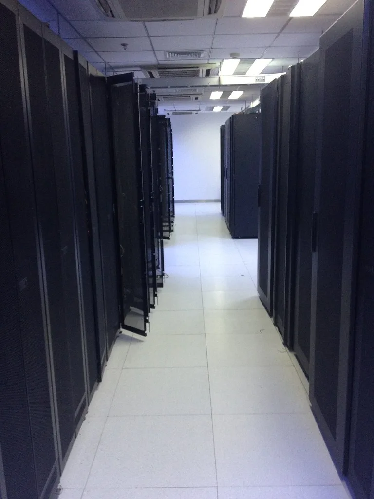

구글, '제미나이 4 아르곤' 전 세계 공개…출력 100만 토큰 '에이전트형 AI' 승부수
구글이 새 인공지능 모델 '제미나이 4 아르곤'을 전 세계에 공개했다. 구글 딥마인드는 지난 13일 이 모델을 정식 출시했다고 발표했다. 제미나이4 계열의 최상위 프론티어 모델로, 짧은 질의응답을 넘어 복잡하고 장시간 이어지는 업무를 끝까지 추론해 처리하는 데 초점을 맞췄다는 설명이다. 업계에서는 이번 출시를 두고 구글이 생성형 AI 성능 경쟁에서 다시 선두로 나서려는 승부수로 평가하고 있다.
이번 모델의 가장 눈에 띄는 변화는 출력 토큰 한도의 대폭 확장이다. 기존 6만4000 토큰 수준이었던 한도가 업계 최고 수준인 100만 토큰으로 늘어났다. 단일 작업 흐름 안에서 수십만 토큰에 달하는 장기 추론과 코드 생성을 사람의 중간 개입 없이 이어갈 수 있게 됐다는 의미다. 구글은 이를 통해 복잡한 업무를 스스로 끝까지 처리하는 'AI 에이전트'를 구축하는 데 최적화된 모델이라고 강조했다.
활용 분야도 코딩을 넘어 기업 업무 전반으로 넓어졌다. 구글에 따르면 아르곤은 복잡한 코딩 작업뿐 아니라 금융·법률 같은 전문 기업 업무, 사이버 보안 방어까지 겨냥한 모델이다. 코드의 오류를 스스로 찾아 고치고, 여러 자료를 한꺼번에 읽어 조사 결과를 정리하거나, 방대한 금융·법률 문서를 다루는 일이 실제 사용처로 제시됐다. 구글은 신약 연구에도 이 모델을 투입할 수 있다고 소개하며 활용 범위를 산업 전반으로 확장했다.
로봇 분야 응용도 눈에 띄는 대목이다. 아르곤은 영상과 1인칭 시점의 동작을 분석해 가상 환경을 구축하고, 물리 시뮬레이션 환경에서 복잡한 작업과 퍼즐을 수행하고 검증하는 능력을 갖췄다. 영상과 3차원 기하 구조, 물체 간 접촉, 로봇의 관절과 센서 정보를 함께 추론할 수 있다는 점에서, 실제 로봇 개발 현장에 곧바로 투입할 수 있는 모델이라는 평가가 나온다.

다만 구글은 이번 모델을 곧바로 모든 이용자에게 전면 개방하지는 않았다. 사전에 검증된 사이버 보안 방어 파트너와 미국 정부의 출시 전 평가 프로세스 참가자에게 먼저 접근 권한을 주는 '페어윈드' 프로그램을 통해 단계적으로 공개하는 방식을 택했다. 구글 AI 울트라 구독자와 일반 개발자·기업을 대상으로 한 API 공개는 추후 순차적으로 이뤄질 예정이다. 민감한 영역에 쓰일 수 있는 고성능 모델의 특성을 고려해, 성능 공개와 위험 관리 사이에서 속도를 조절하는 전략으로 풀이된다.
이번 발표는 글로벌 AI 경쟁이 다시 한번 가열되는 시점에 나왔다. 앞서 메타도 차세대 모델을 잇따라 선보이며 그동안 오픈AI와 앤트로픽이 주도해 온 양강 구도에 도전장을 던진 바 있다. 구글이 토큰 처리량과 추론 지속성을 앞세운 아르곤으로 성능 1위 탈환을 노리는 가운데, 업계에서는 AI 모델 간 경쟁이 단순 성능 비교를 넘어 실제 기업 업무와 로봇 산업으로까지 확산되는 양상을 주목하고 있다.
국내에서도 이번 발표를 지켜보는 시선이 많다. 네이버와 카카오 등 국내 플랫폼 기업들이 저마다 다른 AI 전략을 구사하는 가운데, 구글 같은 빅테크의 고성능 모델 공개가 국내 기업들의 전략 수정으로 이어질지 관심이 쏠린다. 장기 추론과 에이전트형 작업에 특화된 모델이 실제 기업 현장에 어떻게 도입될지가 다음 관전 포인트로 꼽힌다.